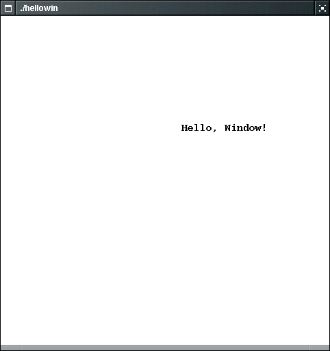

previous
|
start
|
next
Graphics Structures (Messages)
You can display text anywhere you like using
Message
objects.
You point parameter specifies the
upper left corner
of the message.
Point p(1, 3); Message greeting(p, "Hello, Window!"); cwin << greeting;

previous
|
start
|
next